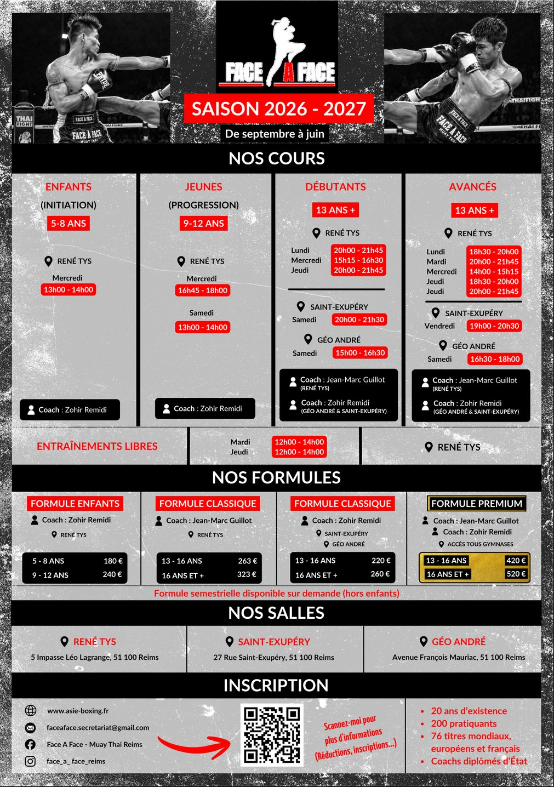
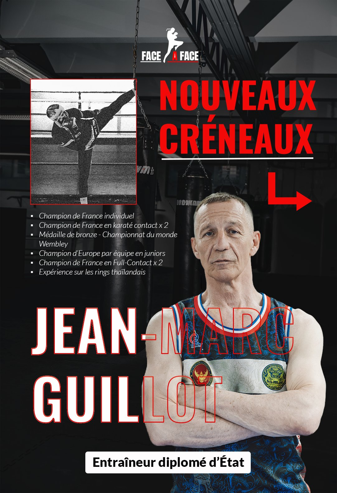
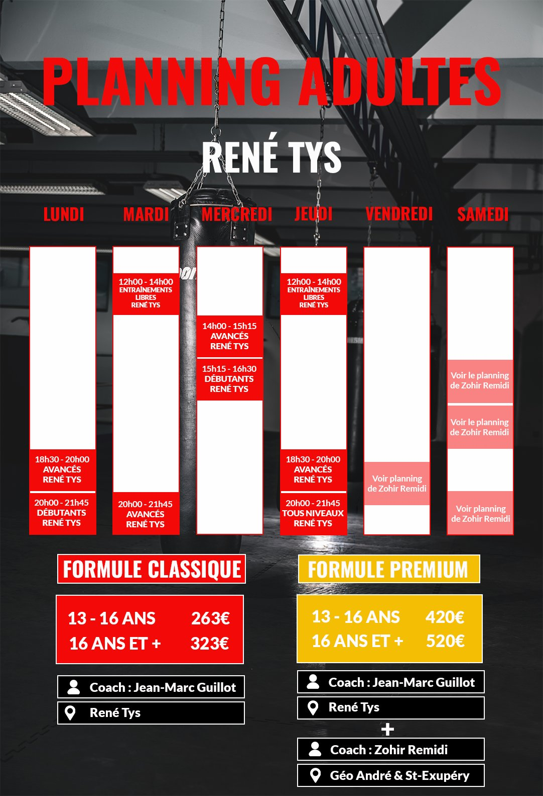
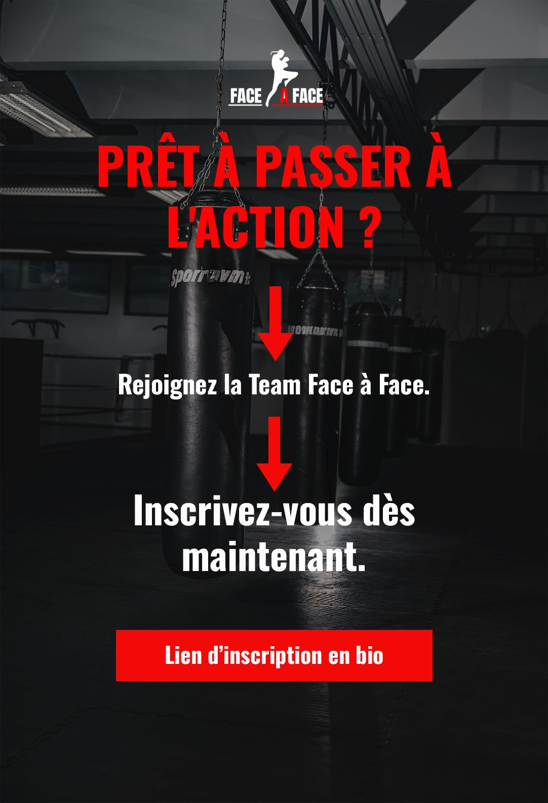
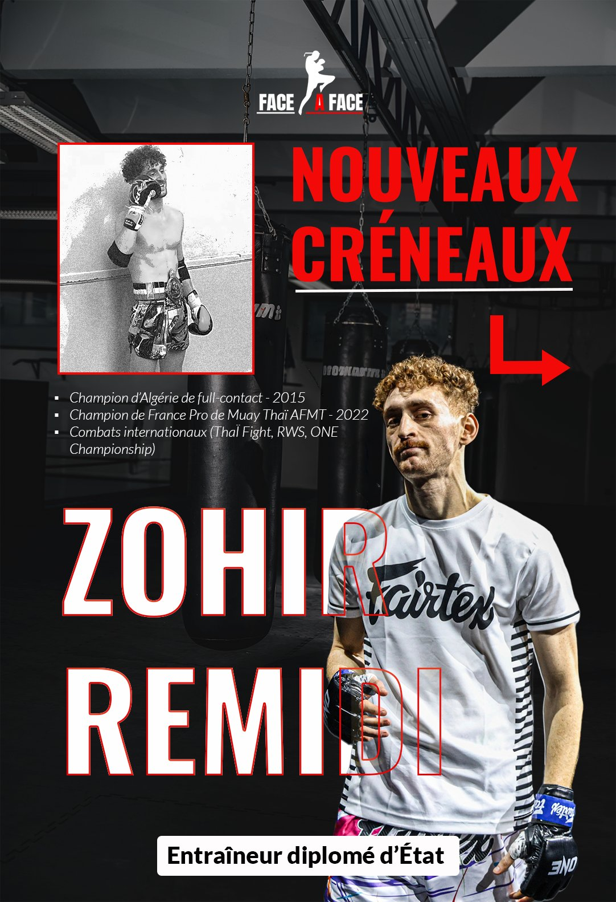
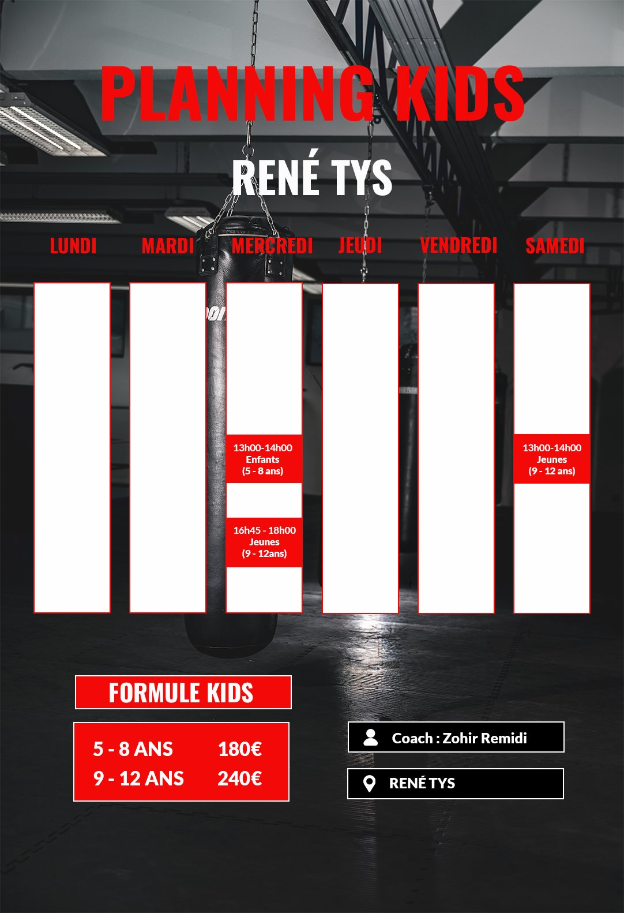
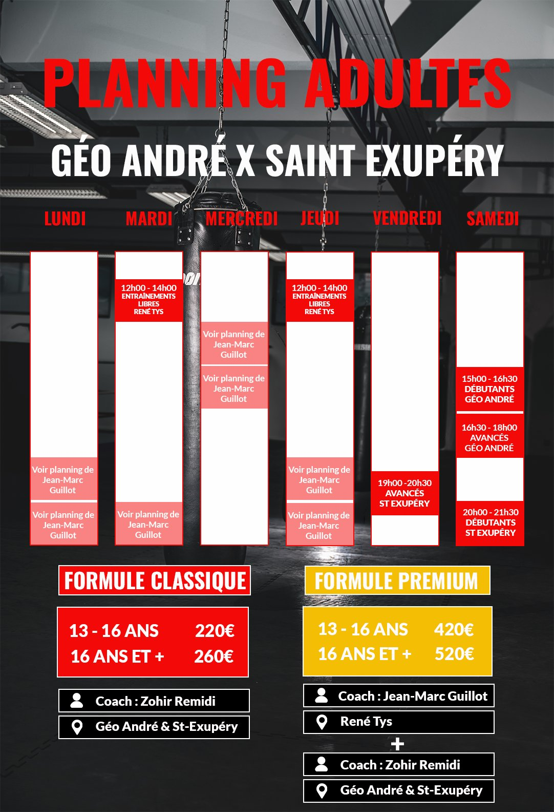
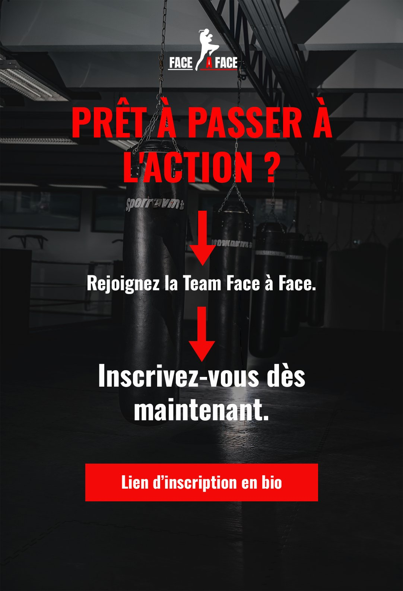

Projet 01 — Réalisation complète
Face à Face —
Club de Muay Thaï
Face à Face est un club de Muay Thaï bien implanté, porté par son entraîneur Jean-Marc Guillot. La mission : accompagner sa communication sur plusieurs fronts à la fois — vidéo pour capter l'énergie des entraînements, photographie pour documenter la pratique, identité graphique et supports print pour les événements du club — avec une cohérence visuelle unique du premier au dernier livrable.
Production vidéo
Deux tournages, une énergie commune.
Le premier tournage avait pour objectif d'annoncer l'arrivée de Zohir Remidi, nouveau coach de la section enfants créée pour la saison 2026–2027. Pour introduire son parcours, le choix s'est naturellement porté sur Jean-Marc Guillot, fondateur du club et ancien entraîneur de Zohir.
À travers une interview de 50 secondes, Jean-Marc revient sur leur histoire commune et explique pourquoi il a choisi de lui confier cette nouvelle section. Son témoignage est accompagné de photographies d'archives prises en compétition, à l'époque où Zohir était encore élève de Face à Face.
Pensée comme un teaser, la vidéo dévoile progressivement leur relation et le parcours de Zohir, tout en conservant une part de mystère autour de l'identité du nouveau coach. L'objectif : susciter la curiosité tout en donnant du sens au choix du club.
Production vidéo
Zohir Remidi — au cœur du coaching.
Captation réalisée au cœur d'une séance de coaching menée par Zohir Remidi au sein du club Face à Face. Cette seconde réalisation met davantage l'accent sur son approche du coaching, son énergie et la relation construite avec les pratiquants.
Supports print
Une communication qui existe aussi hors-ligne.
Pour la saison 2026–2027, Face à Face m'a confié la conception du verso de son flyer afin d'y réunir une importante quantité de nouvelles informations : coachs, sections, créneaux et formules. L'enjeu était de structurer et hiérarchiser ces contenus dans un espace restreint, tout en prolongeant l'univers visuel du recto existant. Un travail d'équilibre entre densité d'information, lisibilité et cohérence graphique, pour rendre le support immédiatement compréhensible sans sacrifier son impact visuel.

Communication digitale
Clarifier l'offre, guider le choix.
Dans le cadre de la communication autour de la saison 2026–2027, deux carrousels ont été conçus afin de présenter de manière claire les différentes offres proposées par Face à Face. L'objectif était de faciliter la compréhension des créneaux, des salles, des coachs et des formules disponibles, dont l'organisation varie selon les sections.
Chaque carrousel met ainsi en avant un coach — Jean-Marc Guillot et Zohir Remidi — ainsi que les informations qui lui sont associées. La section enfants étant notamment encadrée exclusivement par Zohir Remidi, il était essentiel de rendre immédiatement perceptibles les différences entre les formules et d'aider le public à identifier celle correspondant le mieux à sa pratique.
Une attention particulière a également été portée à la formule Premium, pensée comme l'offre la plus complète. Elle permet d'accéder à l'ensemble des salles, des créneaux et aux entraînements proposés par les deux coachs. Le travail graphique devait donc hiérarchiser une quantité importante d'informations tout en orientant naturellement le regard vers cette formule, sans compromettre la lisibilité générale des supports.







Identité visuelle
Une identité forte, prolongée à travers chaque support pour faire vivre l'énergie du club bien au-delà du ring.
À venir
D'autres visuels du projet — photographies, créations graphiques et mockups supplémentaires — viendront enrichir cette page au fur et à mesure de leur réception.